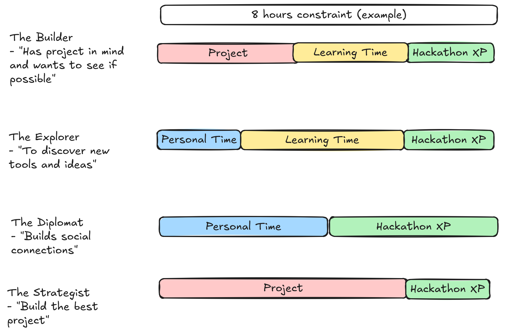

Here are four archetypes of hackathon participants that are based on their actions. Some archetypes are characterized by prioritizing their hackathon Project and spending most of their time and energy on it. Others equally spend their time across the hackathon's learning opportunities and fun events (Hackathon XP) while also working on a Project.

These archetypes describe four different types of hackers. A corresponding graphic describes the relative time commitment the different hackers allocate in terms of project development, learning and discovery, interpersonal connections, and hackathon experiences. Think about which archetype you are and use this to budget your time based on your goals. (Note: there may be more than these archetypes and you can be a blend of two or more)
The Builder: Roberta codes every day and is always curious about new technologies and approaches. However, in her normal day-to-day life, there's not enough space to pick up new skills or develop side projects. She loves hackathons because it is an opportunity to have focused time to learn a new tool, language, or technique while building a product as part of a motivated team. Roberta attends all the workshops relevant to her project and works on projects that are personally relevant, leading projects if necessary.
The Diplomat: Derrick may or may not code for a living, but hackathons are still a major part of his regular activities. This is because he sees them as a concentration of interesting and fun people. During hackathons, Derrick spends his time hanging out with regulars who become friends, participating in official hack side activities, and interacting with people from different departments. Derrick leaves hackathons refreshed and ready to go back to his regular duties.
The Explorer: Programming is somewhat familiar to Jack but it may not be a major part of his career. He enjoys going to hackathons without any particular agenda to participate in activities he wouldn't normally have access to, such as domain specific workshops, talks from vendors or industry representatives, and social outings. To Jack, a hackathon is an opportunity to briefly immerse in a stream of new knowledge, which might help him later on.
The Strategist: Dominique is an experienced programmer with many ideas that just need time to implement. She strategically enters hackathons in which her projects would be likely to take home the top prize or be a featured product. Dominique is an organized and effective team leader and uses her expertise to properly scope projects so that they can be finished and polished by presentation time. She spends the majority of her time working on the project and is generally not interested in workshops or other activities.